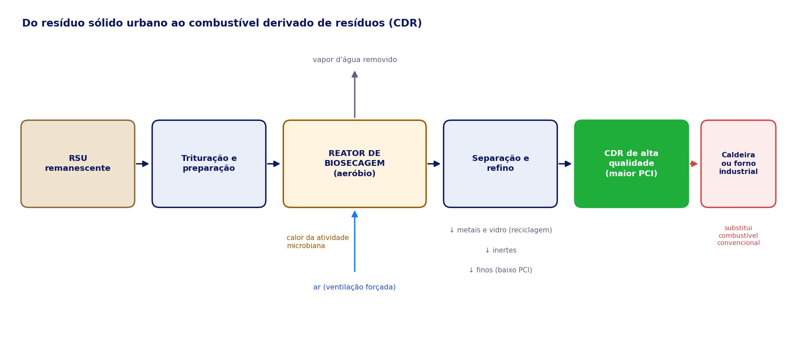
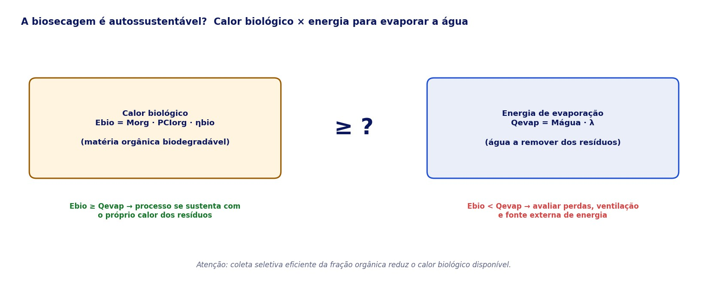
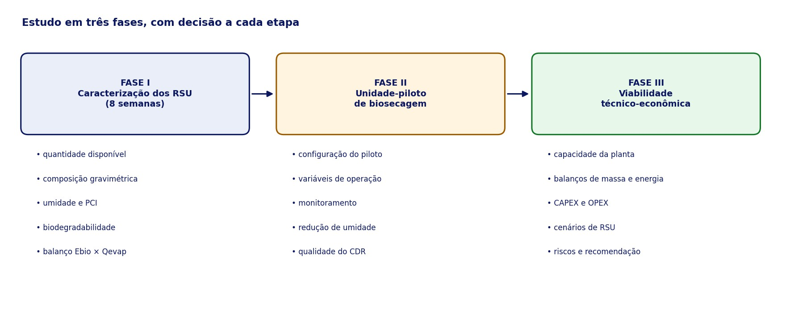

O problema que resolve
Muitas indústrias dependem de combustíveis convencionais caros para gerar calor, enquanto os municípios próximos enviam toneladas de resíduos sólidos urbanos para aterros.
O CDR une os dois lados: transforma a fração não reciclável dos resíduos em combustível para a própria indústria. O desafio é que os resíduos são úmidos e heterogêneos, com poder calorífico baixo e variável.
Como funciona
A biosecagem é um processo aeróbio: o calor liberado pelos microrganismos, junto com a ventilação forçada, evapora a água dos resíduos. Diferente da bioestabilização, o objetivo é um material mais seco e com mais energia.
Depois, o material é refinado para remover metais, vidro, inertes e finos, elevando a qualidade do CDR.
Do resíduo ao combustível

O que cada uma faz
Biodegradável: fonte do calor que seca o material. Combustível (papel, plásticos, têxteis, madeira): define o potencial energético. Reciclável (metais, vidro): recuperada no refino. Inertes e finos: removidos.
Autossustentação térmica
O calor biológico da matéria orgânica precisa ser suficiente para evaporar a água dos resíduos (Ebio × Qevap). Esse balanço define se a biosecagem funciona sem energia externa.
Ganho de energia
Na literatura internacional, duas semanas de biosecagem elevam o poder calorífico inferior do material em cerca de 30% e o do CDR refinado em cerca de 44%. A energia fica concentrada em um combustível mais seco, leve e uniforme.

Balanço energético
O núcleo técnico é comparar o calor que a matéria orgânica pode liberar com a energia necessária para evaporar a água dos resíduos.

Onde se aplica
- Indústrias que geram calor com combustíveis convencionais e querem substituí-los.
- Municípios e consórcios que precisam reduzir o volume enviado a aterros.
- Plantas de pequena escala, próximas à indústria consumidora do CDR.
Diferenciais
- Secagem com o calor do próprio resíduo, sem combustível externo.
- Planta dimensionada pela demanda térmica de uma indústria específica.
- Qualidade controlada: poder calorífico, cinzas, cloro e enxofre.
- Decisão por fases, com dados de campo e de piloto antes do investimento.
Como implantamos
Caracterização dos resíduos
Dados históricos e projeções, amostragem, composição gravimétrica, umidade, caracterização físico-química e biodegradabilidade.
Unidade-piloto
Configuração do piloto, ventilação e tempo de residência, monitoramento de temperatura, umidade e perda de massa, e qualidade do CDR.
Viabilidade técnico-econômica
Conceito e capacidade da planta, balanços de massa e energia, CAPEX e OPEX, cenários de disponibilidade de resíduos e riscos.
Resultados comprovados
Resultados do piloto ou da planta: PCI do CDR, umidade final, tempo de biosecagem, redução de massa, combustível substituído.
Propriedade intelectual
Patente ou pedido de patente (número, data, situação) ou segredo industrial.
Indicadores econômicos
Custo por tonelada de CDR, economia frente ao combustível substituído, CAPEX, OPEX e prazo de retorno.
Imagens



Cases relacionados
Outras tecnologias GETA
Tratamento de Chorume
Processos físico-químicos avançados sem dependência de sistemas biológicos.
Desaguamento e Inertização de Lodos
Rota tecnológica baseada em reações de encapsulamento químico de metais.
Processo de Oxidação Seletiva (POS)
Radicais carbonato gerados a partir de CO₂ atacam só os compostos inibidores, para gerar mais biometano.
Quer aplicar uma dessas tecnologias?
Avaliamos o seu efluente ou resíduo e indicamos a rota mais adequada, com ensaio de tratabilidade.